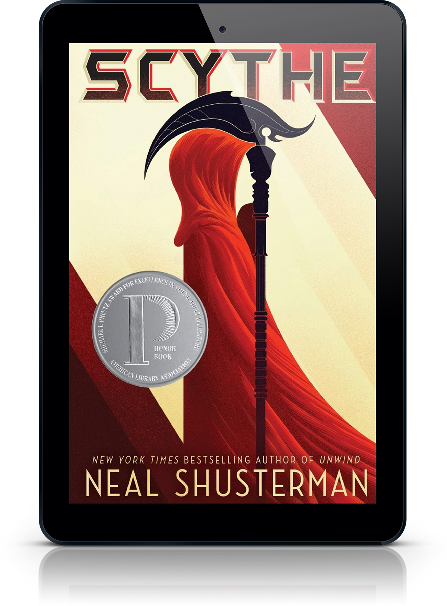

Em's Fantasy Book Recommendations
The fantasy book I recommend is Scythe by Neal Shusterman. This book takes place in a world with no hunger, no disease, no war, no misery: humanity has conquered all those things, and has even conquered death. Now Scythes are the only ones who can end life—and they are commanded to do so, in order to keep the size of the population under control.
